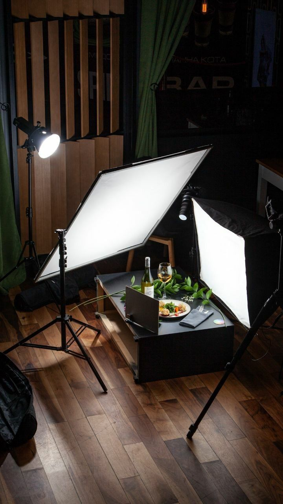

Welcome to the Food Photography Department
BFood and food photography is one of the most attractive photography categories for photographers. In recent years, food photography is one of the most sought-after jobs in the Middle East and the Gulf region. With the boom in restaurants, hotels, and bakeries, food photography has become an important and functional skill for job-seeking photographers.

Plan before you start shooting
Professional photographers always tend to plan with drawings and portraits before they begin. In food photography, it's important to start planning before setting up your shoot and getting into the studio. Photographing dishes, food and drinks depends a lot on good and smart preparation
shooting angle
Have you ever seen a low angle pizza shot? or soup? How about a burger pictured from above? There are very obvious reasons for this. Play with the angles. Move around your food. Try shooting from above, then try from below. What angle shows food best? There are no rules, but some angles seem to work better than others.
composition in photography
When you take a photograph, you must make some kind of decision about what elements you want to include in the photo, and most importantly how to arrange those elements in your photo.
Basic rules of composition
Firstly, preconception, meaning imagining how the image will look, secondly, the visual balance, so that the image is balanced, sound and stable, thirdly, giving importance to the aspects of the image, fourthly not cutting the edges.
Choosing the right lighting
Lighting is the most important basics of a professional image, and the success of the photographer depends on choosing the appropriate lighting, distributing it correctly during shooting and the directions of light.

Choosing the right camera for food photography
When choosing a camera, it is preferable to delve into the features and choose the most appropriate for photographing foods. It is not necessary that the high price indicates its quality.
And the tables surrounding the meals and taking pictures need to include a lot
of the surrounding elements


.jpeg)

.jpeg)